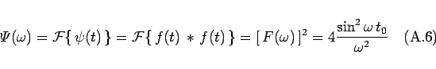

Inhalt Index DeskTop Bronstein

 Integraltransformationen Fourier-Transformation Eigenschaften der Fourier-Transformation Rechenregeln zur Fourier-Transformation
Integraltransformationen Fourier-Transformation Eigenschaften der Fourier-Transformation Rechenregeln zur Fourier-Transformation


bezieht sich auf das Intervall () und existiert unter der Voraussetzung, daß die Funktionen f1(t) und f2(t) in diesem Intervall  absolut integrierbar sind. Wenn f1(t) und f2(t) beide für t < 0 verschwinden, dann ergibt sich aus (15.93) die einseitige Faltung
absolut integrierbar sind. Wenn f1(t) und f2(t) beide für t < 0 verschwinden, dann ergibt sich aus (15.93) die einseitige Faltung
| (15.94) |
Diese ist somit ein Spezialfall der zweiseitigen Faltung. Während die FOURIER-Transformation die zweiseitige Faltung benutzt, verwendet die LAPLACE-Transformation die einseitige Faltung.
Für die FOURIER-Transformation der zweiseitigen Faltung gilt
| (15.95) |
wenn die Integrale
| (15.96) |
existieren, d.h., die Funktionen und ihre Quadrate im Intervall  integrierbar sind.
integrierbar sind.
| Beispiel |
|
Es ist die zweiseitige Faltung Da 
|